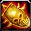

SPÉCIALISATION MAGELADIN
SPÉCIALISATION MAGELADIN Le Paladin est une classe Polyvalente qui peut être à la fois lanceur de sort, soigneur et attaquant au corps à corps. La particularité de la spécialité Mageladin réside dans ses dégâts avec les sorts. Ce sont des dégâts direct de type Sacré. Ses dégâts sont efficace en monocible, mais pas en multicible.
C'est une classe complexe nécessitant de l’anticipation dans la gestion de ses sceaux, son Horion sacré et sa mana.
En PvP c'est une spécialisation facile à jouer, car cette classe a peut de sorts d'attaque, beaucoup de survie et quelques controles, mais on peut facilement contrer ses sorts de soins.
Elle est très utile en bg, pas très viable pour de la 2c2 en arène, et adaptée pour de la 3c3 ou 5c5.
 LES SORTS LES PLUS UTILISÉS
LES SORTS LES PLUS UTILISÉS
De dégâts
 Horion sacré (Soigne une cible ami, mais peut aussi infliger des dégats à un ennemi)
Horion sacré (Soigne une cible ami, mais peut aussi infliger des dégats à un ennemi) Sceau de piété (Chaque attaque de mélée inflige des dégâts de sacré supplémentaires, le jugement de ce sceau inflige des dégâts direct de sacré)
Sceau de piété (Chaque attaque de mélée inflige des dégâts de sacré supplémentaires, le jugement de ce sceau inflige des dégâts direct de sacré) Marteau de courroux (Sur une cible ayant 20% de ses PV)
Marteau de courroux (Sur une cible ayant 20% de ses PV) Sceau de vengeance (Uniquement chez les Draeneï, Nains et Humains, Les dégâts en mélée applique un DOT sur la cible qui inflige des dégâts de sacré en 15 sec et peut se cumuler 5 fois. Le jugement de ce sceau inflige des dégats du sacré par application de Vengeance sacrée)
Sceau de vengeance (Uniquement chez les Draeneï, Nains et Humains, Les dégâts en mélée applique un DOT sur la cible qui inflige des dégâts de sacré en 15 sec et peut se cumuler 5 fois. Le jugement de ce sceau inflige des dégats du sacré par application de Vengeance sacrée) Jugement (Libèrer l'énergie d'un sceau)
Jugement (Libèrer l'énergie d'un sceau)De soutiens
 Lumière sacrée
Lumière sacrée Eclair lumineux
Eclair lumineux Epuration (Pour enlever un effet de poison, de maladie et/ou de magie)
Epuration (Pour enlever un effet de poison, de maladie et/ou de magie) Bouclier divin (Rend invincible, on peut toujours attaquer, mais le temps entre les attaques est augmenté)
Bouclier divin (Rend invincible, on peut toujours attaquer, mais le temps entre les attaques est augmenté) Sceau de lumière (Les attaques de mélée rendent des points de vie, le jugement de ce sceau confère une chance de rendre de la vie avec les attaques de mélée, si on attaque cette cible jugé)
Sceau de lumière (Les attaques de mélée rendent des points de vie, le jugement de ce sceau confère une chance de rendre de la vie avec les attaques de mélée, si on attaque cette cible jugé) Sceau de sagesse (Chaque attaque rend des points de mana, le jugement de ce sceau confère une chance de rendre de la mana avec toutes les attaques sur la cible jugé)
Sceau de sagesse (Chaque attaque rend des points de mana, le jugement de ce sceau confère une chance de rendre de la mana avec toutes les attaques sur la cible jugé) Sceau du Croisé (Augmente la puissance d'attaque et la vitesse d'attaque en mélée, mais vous infligez moins de dégâts, le jugement de ce sceau augmente les dégâts du sacré que la cible subit)
Sceau du Croisé (Augmente la puissance d'attaque et la vitesse d'attaque en mélée, mais vous infligez moins de dégâts, le jugement de ce sceau augmente les dégâts du sacré que la cible subit) Bénédiction de protection (Protège un membre ou vous même des attaques physique pendant 10 sec. mais empêche d'utiliser des techniques physiques pendant ce temps, vous pouvez toutefois utiliser des sorts)
Bénédiction de protection (Protège un membre ou vous même des attaques physique pendant 10 sec. mais empêche d'utiliser des techniques physiques pendant ce temps, vous pouvez toutefois utiliser des sorts)
 Bénédiction de lumière / supérieure (Augmente les effets des sorts de Lumière sacrée et Eclair lumineux)
Bénédiction de lumière / supérieure (Augmente les effets des sorts de Lumière sacrée et Eclair lumineux) Bénédiction de sagesse / supérieure (Augmente la regen mana toutes les 5 secondes de 41 points)
Bénédiction de sagesse / supérieure (Augmente la regen mana toutes les 5 secondes de 41 points)  Bénédiction de puissance / supérieure (Augmente la puissance d'attaque)
Bénédiction de puissance / supérieure (Augmente la puissance d'attaque) Bénédiction de sacrifice (A placer sur un ami qui transfère des points de dégats par coup au lanceur de sorts)
Bénédiction de sacrifice (A placer sur un ami qui transfère des points de dégats par coup au lanceur de sorts) Bénédiction de salut / supérieure (Diminue la menace généré par les attaques de 30%, inutile en PvP)
Bénédiction de salut / supérieure (Diminue la menace généré par les attaques de 30%, inutile en PvP) Rédemption (Pour rez un ami)
Rédemption (Pour rez un ami) Aura de dévotion (Augmente l'armure)
Aura de dévotion (Augmente l'armure) Aura de vindicte (Inflige des dégats du sacré à toute créature qui vous frappe)
Aura de vindicte (Inflige des dégats du sacré à toute créature qui vous frappe) Aura de résistance à l'Ombre
Aura de résistance à l'Ombre Aura de résistance au Givre
Aura de résistance au Givre Aura de résistance au Feu Aura de sainteté (Augmente les dégâts du sacré)
Aura de résistance au Feu Aura de sainteté (Augmente les dégâts du sacré) Les caps et stats
Les caps et statsRappel : Un cap par définition c'est la valeur à partir de laquelle vous n'avez plus aucun intérêt à monter une statistique.
Expliquées par ordre de priorité :
Le dégât des sorts
C'est une stat importante qui n'a pas vraiment de cap et que vous allez la monter avec le stuff, les enchantements et les gemmes. Vous pouvez aussi ajouter un bijoux dégâts des sorts en plus de votre  trinket PvP comme le bijoux Icône du croissant d'argent ou  Don de Xi'ri (qui vous donne aussi du critiques)
Don de Xi'ri (qui vous donne aussi du critiques)
Avec 600 de dégâts des sorts au début vous commencerais à être bien. Ensuite avec le stuff vous ne monterez pas plus de 900-1000 de dégâts des sorts suivant votre spé.
Le critique des sorts
Mieux vaux prioriser cette stat, que de l'intelligence. En PvP il vous faut au moins atteindre les 17% de coup critiques de base. La vous ferez déjà de bon critiques, mais ce n'est pas suffisant, car le cap monte à 21% (Sans compter les talents qui augmente de 8% le critique des sorts)
Vous pouvez toutefois monter légèrement au dessus du cap, à 23%, car la résilience diminue les chances de recevoir un coup critique.
La pénétration des sorts
Cette stat ci comparé au toucher des sorts, évite les résistes adverse. C'est à dire que plus vous avez du score de pénétration, moins l'ennemi va "résister" à vos sorts.
Peu de joueurs ont une grosse résistance à la nature, inutile donc de trop monter cette stat, sachant que les bagues PvP vous donnent 14 de pénétration des sorts chacune. Il y a l'enchant sur cape de 20 pénétration aussi, ce qui vous fait un total de 48 au score de pénétration des sorts.
Autant dire que cela suffit, car il n'y a pas de "cap" à proprement dit. Mais toutefois si vous avez des "résistes" vous pouvez mettre une gemme ou deux de pénétration des sorts (accouplé à du critique des sorts) vue qu'il vous faudra deux gemme bleue pour activer votre méta (voir plus bas)
Le toucher des sorts
Tout d'abord il faut comprendre que le toucher des sorts vous permet d'éviter "les ratés" quand vous lancer un sort (à ne pas confondre avec la pénétration des sorts).
En PvP contre une cible de même niveau vous devrez "théoriquement" avoir 4% de toucher des sorts. Mais le cap est néanmoins de 38 au score de toucher soit 3%, car il y a 1% "incompressible", c'est à dire pas nullifiable via spellhit/talent/buff/etc... La masse / dague s2 vous donne 1,19% de toucher des sorts, donc il vous manque 1,81% ce qui n'est pas énorme. Donc le score de toucher n'est qu'une stat optionnelle, et il ne vous est pas obligé de devoir la up en PvP du moins.
Si vous estimez toute fois que vous faites beaucoup de "raté", essayez d'augmenter votre toucher légérement. Mais je rappel encore qu'en PvP il est inutile de monter cette stat, car cette stat est juste en relation avec la différence de niveau de l'ennemi. Or la vous avez le même niveau que l'ennemi forcement. (Alors qu'en PvE les boss sont de niveau 73, donc ils ont plus de score de toucher)
La résilience
Cette stat est importante en PvP. Elle diminue les dégâts des sources de dégâts périodiques (DOT) et les chances de recevoir un coup critique. Diminue aussi les effets des drains de mana et les dégâts des coups critiques.
Pour faire simple le cap de la résilience est de 492.5, au dessus de 500, la résilience ne diminue plus les chances de recevoir un coup critique (diminué de 25% au max). Mais il n'y a pas de cap résilience pour la diminution des dégâts des DOT.
L'endurance
C'est la Stat de la survivabilité, assez importante en PvP. à monter en second plan à la fois avec le stuff mais aussi avec quelques enchant / gemmes.
Il ne faut pas non plus trop la monter, à partir de 10k PV, vous en aurez assez. Vous pouvez monter au max à 11K.
Vous pouvez mettre deux gemmes dégâts des sorts (gemme rouge / bleue) si votre pénétration des sorts vous convient, pour activer votre méta (voir plus bas).
Le score de hate des sorts
C'est ce qui vous réduit le temps d'incantation des sorts
Cette stat est utile au bout de 200 au score de hate. Sachant que les seuls incantations que vous faites sont des sorts de soins, cette stat vous sera strictement inutile.
L'intelligence
Une stat de base utile, qui vous donnera un peu de coup critique et des dégats des sorts suivant votre spé. En PvP c'est la stat que vous montez avec votre stuff. Donc inutile d'en dire plus.
La regen mana/5sec
Stat peu importante, vue qu'en PvP les combats sont fait pour ne pas durer. Si vous êtes sans mana, il vous suffit de regen. Si vous êtes en combat et sans mana, il y a la bénédiction de sagesse et le Sceau de sagesse pour palier à ce problème.
Donc la MP5 n'est pas une stat à up en PvP
 L'arbre de talent
L'arbre de talentAvant de commencer vous pouvez voir les talents paladin sur ce site
Les points importants dans la spé Mageladin sont :
 Intelligence divine Sceau de piété amélioré Lumière guérisseuse Horion sacré Jugement amélioré Sceau du croisé amélioré
Intelligence divine Sceau de piété amélioré Lumière guérisseuse Horion sacré Jugement amélioré Sceau du croisé amélioré Conviction (suivant votre spé)
Conviction (suivant votre spé) Poursuite de la justice Aura de sainteté Aura de sainteté (Suivant votre spé)
Poursuite de la justice Aura de sainteté Aura de sainteté (Suivant votre spé)Vous pouvez cliquer sur les images pour les agrandir.
Mageladin (Shockadin)

Variante

Variante 2

Mageladin spé Vengeance

Vous aurez moins de dégâts des sorts avec cette spé, mais vous ferez plus de dégats avec le proc  Vengeance, qui augmente tous vos dégats dont ceux du sacré de 5% après un critique de n'importe quelle source, et se cumule 3 fois (soit 15%).
Vengeance, qui augmente tous vos dégats dont ceux du sacré de 5% après un critique de n'importe quelle source, et se cumule 3 fois (soit 15%).
Variante

 Les gemmes
Les gemmesPour ce qui est des enchants et gemmes il vous faut du dégats des sorts principalement couplé à du critiques des sorts !
 Méta-gemme Diamant Bruleciel chaotique : +12 score crit des sorts et +3% aux degats des sorts critiques
Méta-gemme Diamant Bruleciel chaotique : +12 score crit des sorts et +3% aux degats des sorts critiques
Il vous faut 2 gemmes Bleues pour l'activer
 +4 critique des sorts +5 dégâts des sorts, ou
+4 critique des sorts +5 dégâts des sorts, ou  +5 critique des sorts +6 dégâts des sorts
+5 critique des sorts +6 dégâts des sorts +9 dégâts des sorts, ou
+9 dégâts des sorts, ou  +12 dégâts des sorts
+12 dégâts des sortsSi vous voulez monter votre pénétration des sorts optez pour cette compo, mais vous perdrez légèrement en critiques des sorts :
 +4 critique des sorts +5 pénétration des sorts, ou
+4 critique des sorts +5 pénétration des sorts, ou  +5 critique des sorts +6 pénétration des sorts x2
+5 critique des sorts +6 pénétration des sorts x2Si vous avez assez de pénétration des sorts, passez à une compo qui monte l'endurance, mais vous perdrez légèrement en dégats des sorts :
 +5 dégâts des sorts +6 Endurance, ou
+5 dégâts des sorts +6 Endurance, ou  +6 dégâts des sorts +7 Endurance x2
+6 dégâts des sorts +7 Endurance x2 Méta-gemme Diamant brûleciel brasillé : +14 aux dégâts des sorts et +2% à l'Intelligence
Il vous faut 3 gemmes Rouges pour l'activer
Méta offensive
+4 critique des sorts +5 dégâts des sorts, ou +5 critique des sorts +6 dégâts des sorts +9 dégâts des sorts, ou +12 dégâts des sorts Les enchantements
Les enchantementsPar ordre de priorité
Casque
Glyphe de puissance (+22 dégâts des sorts, +14 toucher des sorts) Réputation Sha'Tar Révéré.
Arcanum du gladiateur (+18 Endurance et +20 au score de résilience) Réputation Opération Soleil brisé Amical.
Epaules
Calligraphie superieures de discipline (+18 dégâts des sorts, +10 score de critique des sorts) Exalté Aldor
Calligraphie supérieure de l'orbe (+12 dégâts des sorts, +15 score de critique des sorts) Exalté Clairvoyant
Calligraphie de discipline (+15 dégâts des sorts) Honoré Aldor
Calligraphie de l'orbe (+13 score de critique des sorts) Honoré Clairvoyant
Torse
Résilience majeur (+15 Résilience)
Pts vie exceptionnels (+150 point de vie)
Carac. exceptionnelles (+6 à toutes les caractèristiques)
Brassards
Puissance des sorts (+15 dégâts des sorts)
Robustesse (+12 Endurance)
ou à la limite Intelligence majeure (+ 12 Intelligence)
Cape
Pénétration des sorts (+20 Pénétration des sorts)
Armure majeure (+120 Armure)
ou à la limite Résistance majeure (+7 à toutes les résistances)
Jambes
Craft par un Couturier
Fil ensorcelé runique (+35 dégâts des sorts, +20 Endurance)
Fil ensorcelé mystique (+25 dégâts des sorts, +15 Endurance)
Gants
Puissance des sorts majeure (+20 dégâts des sorts)
Frappe-sort (+15 toucher des sorts)
ou à la limite Explosion (+10 critique des sorts), mais moins rentable.
Pieds
Robustesse (+12 Endurance)
Bagues
Si vous avez enchantement
Puissances des sorts (+12 dégâts des sorts)
Arme
Puissance de sorts majeure (+40 dégâts des sorts), le must absolu pour caster dps
Bouclier
Endurance majeur (+18 Endurance)
Intelligence (+12 Intelligence)
Résilience (+12 Résilience)
Résistance (+5 à toutes les résistances)
Légende :
[Button:1] = bouton gauche de la souris
[button:2] = bouton droit de la souris
[nomod] = bouton par défaut du clavier
[mod:alt] = alt + le bouton par défaut
[mod:shift] = shift + le bouton par défaut
[mod:ctrl] = controle + le bouton par défaut
Ces macros sont adapté pour quelqu'un qui joue à la souris, mais vous pouvez les adapter à votre sauce par exemple :
Avec Consécration, version à la souris
Bouton gauche Consécration rang max, bouton droit Consécration Rang 1.
Version bind clavier :
[Touche par défaut] Consécration rang max, Alt+[touche par défaut] Consécration rang 1.
Pour un raccourci clavier il faut indiquer [nomod] pour la touche par défaut, et vous pouvez remplacer alt pour autre chose sur la deuxième ligne.
Notez aussi que si vous ne mettez aucun rang de sort, le rang maximum sera utilisé.
Equiper un Libram
Vous équipe votre Libram lié à Eclair lumineux et lance en bouton gauche Eclair lumineux, si vous appuyez sur alt et ciblez quelqu'un, le sort est automatiquement lancé sur vous. bouton de droite Bénédiction de lumière, utile si un ami est en difficulté. Vous pouvez faire la même chose avec Lumière sacrée.
Marteau de la justice et Focus
Bouton gauche Marteau de la justice rang max sur notre cible actuelle, bouton de droite Marteau de la justice rang max sur le focus (Il vous faut pour ça un focus avec /focus). Targetlasttarget vous permet de recibler votre ancienne cible.
Horion sacré
Bouton gauche Horion sacré rang max, si vous appuyez sur alt et ciblez quelqu'un, le sort est automatiquement lancé sur vous. Bouton droit de la souris utilise Faveur divine et lance Horion sacré, ce qui vous assure un coup critique avec Horion sacré.
Jugement
Bouton gauche Jugement + Horion sacré en un coût pour burst, bouton droit Sceau de piété, ce qui vous permet de remettre rapidement un Sceau de piété et qui peut être utile dans une phase dps.
Bénédiction de protection et de liberté
/target vous permet de cibler un ami, mais cette partie n'est pas obligatoire. Bouton gauche vous lancez Bénédiction de liberté sur votre cible ou sur vous si vous ne ciblez personne, si vous ciblez quelqu'un et appuyez sur ALT en même temps, le sort se lance sur vous. Bouton droit lance Bénédiction de protection avec le même systême, sur votre cible si elle est dans votre groupe ou raid, sur vous si vous ne ciblez personne, et si vous ciblez quelqu'un et appuyez sur ALT en même temps, le sort se lance sur vous.
Courroux vengeur
Quand on est sur une phase dps et qu'on est sur de pas avoir besoin du Bouclier divin. Utilise votre Courroux vengeur, démarre l'attaque automatique et lance en bouton de droite Fureur vertueuse, bénédiction de sagesse et un sceau de piété pour éviter de se faire trop vite dispel le courroux vengeur. Si vous avez déjà ces buffs actif ou si vous êtes sans mana, inutile d'utiliser le /castsequence.
Macro anti controle
Lorsque l'on est sûr de se faire controler (Sheep, cécité, sap, ect...) on peut spammer cette macro pour lancer la bénédiction de sacrifice sur un allier proche, et dès qu'il subit des dégâts, ça vous libère du controle. Maintenant il faut qu'il y ai un allier proche...
Macro anti-rogue/feral
Vous pouvez la spammer dès que vous voyez un fufu en camouflage, la macro va vous permettre de cibler le premier ennemi et de lui appliquer Marteau de la justice (il faut être en face de lui)

 Haut de page
Haut de page